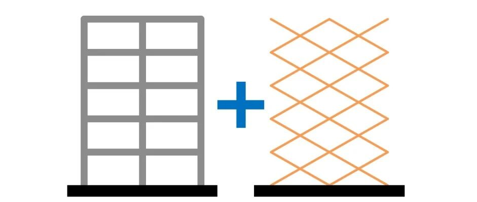

综述论文：建筑结构抗震“体系能力设计法”综述

DOI：10.6052/j.issn.1000-4750.2021.03.0173
00
摘要
建筑结构是由不同力学单元组合形成的复杂系统，从系统层次控制结构在强震下的动力响应与损伤过程对结构抗震设计具有重要意义。为使建筑结构具有“稳定、有序、渐进、可控”的地震损伤机制与破坏模式，预先设计明确的损伤机制和提高结构整体屈服后刚度是有效途径。在此背景下，“体系能力设计法”得以提出和发展。体系能力设计法通过在体系层次设置主、次结构，使结构的弹塑性动力响应受控于抗震能力较高的主结构，从而实现性态控制。本文综述了体系能力设计法中的关键科学问题在近年来的重要发展，并探讨了体系能力设计法的工程指导意义与未来发展方向。
01
体系能力设计法的提出背景
随着抗震工程的发展，建筑结构抗震设计方法渐趋成熟，抗震设计的主要目标从保证结构的地震安全逐步发展到控制地震损失和保障功能可恢复性。无论针对何种目标，从系统层次明确结构在地震作用下的损伤机制与破坏模式，对实现整体结构的抗震性态目标具有重要的科学意义与工程价值。因此，如何提出一套理论可靠且实际操作性强的抗震设计方法，使建筑结构能够具有“稳定、有序、渐进、可控”的损伤机制与破坏模式，成为抗震工程领域亟待突破的关键科学难题，引发了行业学者的广泛关注。
实现建筑结构的抗震性态目标需要控制结构弹塑性地震响应的离散性。但是，经杰的研究表明，一般建筑结构在地震作用下的非弹性响应基本无规律可循。这主要体现在：(1) 不同的地震作用可能在建筑不同楼层产生很大的非弹性地震响应；(2) 对于同样的地震作用和结构体系，如果结构的周期不同，也可能在不同楼层产生很大的非弹性地震响应。因此，常规设计方法多停留在对结构性能目标的被动检验，难以从系统层次主动地控制建筑结构的地震响应。
经杰、马千里、周靖、Christopoulos等的一系列研究表明：在结构进入弹塑性阶段后，如果结构整体的屈服后刚度过小，会出现“薄弱层”并引起损伤和变形的集中，进而增大结构地震响应的离散性。相比之下，具有明确损伤机制和整体屈服后刚度的结构，其地震响应的离散性通常较小。所以，提高结构整体屈服后刚度、预先设计明确的损伤机制，对于结构抗震性能的稳定和震后残余位移的控制具有重要影响，上述观点为建筑结构的性态控制提供了新的发展方向。
通常而言，单一结构体系难以具有足够高的结构整体屈服后刚度。因此，各国学者尝试以不同结构体系的先后屈服来满足上述需求，并相继提出了主－次结构、刚－柔结构等概念。
以主－次结构为例，它是指将结构在体系上区分为主体结构（主结构）和次要结构（次结构）。在荷载分配上，主结构主要承担竖向荷载和部分水平荷载，次结构主要承担水平荷载。次结构先于主结构屈服，起到耗能和保护主结构的作用。这种设计既可以实现较高的结构整体屈服后刚度（由主结构提供），又设定了明确的损伤机制（次结构先屈服耗能，主结构保持完好或低损伤），对控制结构地震响应具有重要意义。在此基础上，叶列平将构件层次的能力设计法扩展到体系层次，提出了“体系能力设计方法”。
02
体系能力设计法的基本理念
“体系能力设计法”的理念来源于能力设计法（Capacity design method）。能力设计法的主要思想是通过控制不同构件之间或同一构件的不同受力状态之间的承载力级差，避免结构出现不合理的损伤机制，使结构具有足够的塑性变形能力和耗能能力，防止结构倒塌。目前流行的“强柱弱梁、强剪弱弯、强连接（节点）弱构件”就是该设计思想的具体体现。能力设计法的关键在于将控制的概念引入结构抗震设计，有目的地引导结构损伤向合理的预期模式发展，是一种主动的结构抗震设计思想。
体系能力设计法将能力设计法的基本理念从构件层次提升到结构体系层次，通过对整体结构的不同部分设定能力级差，采用不同的抗震能力要求，保证主结构在大震下能够提供足够的结构整体屈服后刚度（通过保持弹性或损伤程度很低），并明确预期损伤部位（次结构），使结构的弹塑性动力响应受控于抗震能力较高的主结构，避免变形和能量集中。
为方便定量表达，叶列平定义了两个参数：(1) 能力系数，指各构件的实际承载力与抗震承载力需求之比；(2) 能力比，指不同构件的能力系数之比。对于主－次结构体系，可使主结构中的水平抗侧力构件具有较大的能力系数，而使次结构具有较小的能力系数，并通过能力比控制主、次结构在不同水平地震作用下的性态差异和损伤程度。
体系能力设计法对主结构的特殊性能要求主要体现在：
(1) 具有高承载力，且能提供足够的结构整体屈服后刚度：由于次结构率先进入塑性阶段并耗能，因此在强震作用下，结构整体屈服后刚度主要由主结构提供。为明确结构整体屈服后刚度需求，众多研究学者对屈服后刚度系数h（即结构整体屈服后刚度与初始弹性刚度的比值）开展了研究。
针对框架结构，Nakashima等提出，为使框架结构不出现变形和能量集中，应满足h ≥ 0.75。Connor等以杆系模型为研究对象，指出应满足h ≥ 0.33。经杰和程光煜的研究表明，当h ≥ 0.5时，可以避免变形和累积滞回耗能集中于某一楼层，且h越大，结构地震损伤的分布越均匀。马千里等发现h > 0.2时，结构弹塑性地震响应具有较好的稳定性（响应的离散性随地震动强度变化的稳定程度）；若h > 0.4，则结构在强震作用下的弹塑性响应不仅具有较好的稳定性，还具有较小的离散性。
虽然研究者对于结构整体屈服后刚度的定量需求尚未达成共识，但一致认为主结构需在强震下基本保持弹性或损伤程度较低，以满足结构整体屈服后刚度需求。
(2) 具有高弹性变形能力：目前绝大多数建筑结构构件需要发生较大的变形才能充分耗散地震能量，因此，为使次结构能够充分耗能，主结构必须在维持基本弹性的同时具有足够的变形能力。
(3) 残余变形小：地震后结构的可恢复能力和结构的残余变形关系密切。过大的残余变形会使得结构难以修复而不得不拆除。由于次结构屈服，结构的复位能力将主要由主结构提供。因此，即使主结构不能保持弹性，也应尽量减小其残余变形。
与此同时，体系能力设计法要求次结构：(1) 具有适当的承载力：次结构需要率先进入弹塑性并开始耗能，吸收地震能量；(2) 具有高耗能能力：地震能量将主要依靠次结构耗散。
体系能力设计法的先进性主要在于，它不仅预先设定了不同构件的损伤次序，还对主结构在大震下的具体性能指标（如结构整体刚度退化水平、残余变形大小等）提出了明确的要求，从而使结构整体的地震响应可控。同时，体系能力设计法明确了主、次结构构件的性能要求，从而可以指导主、次结构构件的研发：一方面，主结构采用高强构件，应提供尽可能高的结构整体屈服后刚度，同时具有高承载力、高弹性变形能力和较小的残余变形，这是单纯通过增大传统低强材料构件的截面所难以达到的；另一方面，次结构采用耗能构件，应通过合适的承载力设定与构造设计，形成合理的失效路径，尽量吸收、消耗地震能量。
03
体系能力设计法中的关键科学问题
（1）主、次结构的确定
在体系能力设计法中，应首先将结构体系明确划分为主结构与次结构。根据体系能力设计法对主—次结构的设计要求，主结构承担部分水平荷载的同时，还需要提供足够的侧向刚度或能够控制结构的变形模式，以保证结构整体屈服后刚度要求。由于主结构始终保持弹性或低损伤状态，通常可以同时用于承担竖向荷载。次结构在损伤前主要用于抵抗水平荷载，次结构构件的布置形式一般应对侧向变形比较敏感，且失效后对结构竖向荷载的传递影响不大。所以，次结构中的构件应对结构体系整体抵抗竖向荷载的重要性较低。但并非对于抵抗竖向荷载重要性低的构件都要用于次结构，这些构件也可用于构成主结构以保证其侧向刚度或控制结构的变形模式。基于上述主、次结构的特征，一般可以通过识别结构体系中各构件、子结构在不同荷载形式下的重要性，来确定其是否适合于作为主结构或次结构的一部分。
需要说明的是，某一构件是作为主结构还是作为次结构，并非完全取决于其构件类型，而应根据体系能力设计法的基本概念和实际的构造形式与需求，灵活地选择与设定。只要不违背体系能力设计法的基本概念，同类型的两个构件，可以分别属于主结构和次结构，并根据主、次结构的实际需求分别进行设计。
在长期的工程实践中，关于不同结构构件对各类荷载形式的重要性已经积累了初步的定性经验：(1) 在抵抗重力荷载时，柱一般比梁重要（“强柱弱梁”），下层柱通常比上层柱重要；(2) 在抵抗水平荷载时，边柱一般比中柱重要，核心筒和剪力墙通常比框架重要；(3) 无论何种荷载形式，连接比与其相连的构件重要（“强连接弱构件”）。
这些工程经验为主、次结构的选取与分配提供了重要参考。主—次结构体系一般有以下两种类型：
(1) 主结构对抵抗水平、竖向荷载都重要，次结构仅对抵抗水平荷载重要。一个典型的例子是钢筋混凝土剪力墙结构（如图1），其中，剪力墙作为主结构，对结构抵抗地震水平荷载和重力竖向荷载都至关重要；连梁作为次结构，主要抵抗水平荷载，但失效后对结构的竖向荷载传递影响不大。

图1 钢筋混凝土剪力墙结构体中的主、次结构
(2) 部分主结构只承担水平荷载，不承担竖向荷载，但是对控制侧向变形意义重大；另外一部分主结构主要承担竖向荷载；而次结构仅对抵抗水平荷载重要。典型的例子是摇摆墙－框架结构（如图2），其主结构为摇摆墙和框架柱，次结构为框架梁。地震作用下，摇摆墙虽然不承担竖向荷载，但承担水平荷载，对控制结构整体变形模式至关重要；框架柱对竖向荷载传递重要，并承担部分水平荷载；各层的框架梁通过在梁端形成塑性铰以耗散地震能量。

图2 摇摆墙－框架结构中的主、次结构
尽管以往的工程经验对划分主、次结构具有一定的指导意义，但在实际应用中，由于缺乏对构件重要性的定量评价，会导致主、次结构的确定过分地依赖工程设计人员的经验和专业水平，并且会限制体系能力设计法对不同类型结构（尤其是新型结构体系）的适用性。目前已有一些研究提出了与荷载形式相关的构件重要性定量评价方法。林旭川、叶列平等提出了基于结构广义刚度的构件、子结构和节点的重要性评价指标，如式(1)所示。

式中，I为重要性指标，Kstru,0和U0分别为完好结构的广义刚度和弹性变形能，Kstru,f和Uf分别为某一构件失效后的广义刚度和变形能。构件重要性指标的均方差较大的结构系统通常具有更加明确的主、次结构层次。
以一个4层3跨框架结构（层高3.6 m，跨度5 m）为例，其梁、柱截面尺寸分别为0.25 m × 0.5 m和0.4 m × 0.4 m。按式（1）计算结构在重力和水平荷载作用下各构件的重要性指标，如图3所示。

(a) 重力荷载下构件重要性指标I

(b) 水平荷载下构件重要性指标I
图3 典型框架结构在不同荷载形式下的构件重要性指标
可以发现，在重力荷载作用下，柱的重要性指标明显高于梁，下层柱重要性高于上层柱，符合工程经验；在水平荷载下，虽然柱在整体上比梁更加重要，但是下部楼层中的梁的重要性可能高于上部楼层中的柱，顶层的中柱比边柱重要，但下部楼层的边柱却比中柱重要。该方法可以直观、明确地识别结构中不同构件在不同荷载形式下的重要性。
（2）主、次结构的实现方案
主结构实现方案
根据第2节总结的体系能力设计法对主结构的要求，主结构中通常需要使用柱、墙等构件。在具体实施操作时，可参考以下两种方式：
(1) 采用高承载力、高变形能力和低残余位移的竖向构件
土木工程结构中新型高强材料（如高强钢材、纤维增强复合材料等）的迅速发展为实现高承载力构件提供了保障。通过使用新型高强材料、优化截面形式，研究人员提出了多种新型高强、高变形能力的柱构件，可以高效地满足主结构大震弹性的需求。
但是对于剪力墙、核心筒等关键构件，由于其几何形式的限制，简单地采用高强材料并不能从本质上大幅提升其弹性变形能力，而通常需要提出新的构造形式。例如，曾勇提出一种新型双功能带缝剪力墙，在中、小地震作用下带缝墙具有较大的刚度和承载力，在大震作用下连接键退出工作，带缝墙在维持一定的抗侧刚度的同时还能保证优越的变形能力（如图4）。

图4 钢筋混凝土双功能带缝剪力墙
张磊以钢混组合柱、钢梁组成主结构，以耗能支撑作为次结构构件，形成框架-支撑筒，以替代普通的钢筋混凝土核心筒，大幅提高了筒体的弹性变形能力（如图5）。

图5 框架-支撑筒体系
(2) 改造关键构件外部受力形式
剪力墙、核心筒等关键构件之所以难以具有较大的弹性变形能力，主要是因为这些构件较大的平面尺寸导致在边缘处产生的大应变与混凝土材料有限的峰值压应变之间存在矛盾。为此，通过弱化这些关键构件与基础或其它构件之间的约束，使它们在地震作用下发生摇摆，可以同时保证高承载力和高变形能力，进而控制整体结构的变形模式。其中的典型代表是摇摆墙－框架结构体系（如图6），该体系由传统的延性框架和具有很大刚度和承载力、且能够绕墙底转动的摇摆墙组成，并通过有效的水平连接措施保证框架与摇摆墙在地震作用下协同工作。此外，可以利用框架结构与摇摆墙连接界面上较大的相对位移设置耗能构件，作为结构体系中的预期损伤部位，不仅使整体结构具有更明确的损伤机制，还有助于减小结构的地震响应。

(a) 摇摆墙－框架结构

(b) 整体破坏机制
图6 摇摆墙－框架结构及其整体破坏机制
次结构实现方案
体系能力设计法要求次结构先于主结构进入塑性阶段并耗能，因此次结构通常可以选择各类新型耗能构件和装置等，如屈曲约束支撑、高性能耗能连梁、耗能伸臂桁架、耗能梁柱节点等。
需要注意的是，结构设计本身是对整个结构体系的几何构形、刚度分布、变形能力、承载力和耗能能力的综合设计。应将建筑结构视作一个系统来研究其设计理论和方法，以有效实现整个结构的各种设计目标。在体系能力设计法中，次结构的设计应考虑次结构与主结构的匹配、以及次结构的损伤次序，主要包括：
(1) 与主结构的变形能力相匹配
次结构构件应尽量布置在对侧向变形敏感的部位，并能够在主结构弹性变形极限内尽早进入塑性耗能阶段，以通过充分耗能来保护主结构。典型的代表是在钢支撑框架中采用低屈服点屈曲约束支撑作为次结构。一方面，支撑本身对侧向变形非常敏感，另一方面，使用低屈服点钢材进一步降低了钢支撑的屈服变形，有效保证了钢支撑先于主体框架结构进入屈服耗能阶段。
(2) 与主结构的承载力相匹配
次结构的设计还应与主结构的承载力相匹配。地震作用下，如果次结构的承载力过低，会削弱次结构耗散地震能量的能力，在大震作用下可能会由于次结构耗能不足而导致主结构产生损伤；反之，如果次结构承载力过高，可能导致主结构构件率先屈服和损伤。例如，杨青顺在研究端部带软钢阻尼器的伸臂桁架时，发现软钢阻尼器的承载力和刚度相互耦合，导致难以同时满足伸臂桁架的承载力设计目标和刚度设计目标。
(3) 如何主动吸引能量
为使次结构能够主动吸引地震能量，一方面，可降低次结构的屈服强度，达到先于主结构屈服的目的。其中，Lin等提出在高强钢框架的梁柱连接焊缝附近设置保险丝连接板，通过控制保险丝连接板的强度阈值，将构件的损伤和耗能转移至可更换、耗能能力较强的保险丝元件上。
另一方面，当次结构屈服后，可通过引入负刚度机制，主动降低次结构构件的屈服后强度，防止次结构屈服后承载力继续强化，限制损伤向主结构传递，最终达到保护主结构并通过次结构吸收耗散能量的目的。例如，朱亚宁研发了一种新型的牺牲耗能支撑用于伸臂桁架的腹杆，在大震作用下通过“牺牲装置”主动降低屈服后承载力，充当了“周边框架－伸臂桁架－核心筒”串联体系中的“结构保险丝”，充分发挥其耗能能力以有效降低主结构的损伤。此外，还可将负刚度装置与黏滞型被动阻尼器配合使用，这种方式既能抑制由于弱化结构导致的位移增大效应，也可耗散地震能量。
(4) 次结构的损伤次序
如前所述，次结构需要率先进入耗能模式，但是为了保证结构整体特征的延性行为，充分发挥多道抗震防线作用，次结构的损伤次序应当进行合理设计，使结构的损伤能够“渐进、有序”的进行。次结构的损伤次序需要同时考虑不同构件类型和不同构件位置。
众多学者通过研究不同结构体系（框架－核心筒、斜交网格筒－核心筒、巨型型钢混凝土框架－核心筒、巨型支撑-框架－核心筒等）的构件失效顺序及内力重分配过程发现，主、次结构各构件功能属性的明显区分、复杂的构件种类及独特的传力机制，共同影响了各个构件在塑性内力重分配过程中的屈服顺序和失效机理。
在体系能力设计法中，次结构构件的能力系数越小，构件屈服越早。因此，可以通过控制次结构构件的能力系数来实现不同构件的逐级屈服。
林旭川提出“重要构件承载力储备高”的结构失效控制思路，通过针对框架结构的算例研究，指出最长路径失效模式（重要性指标小的构件先屈服）是在结构失效前可能屈服构件的数量上限，相比最短路径失效模式，能够充分利用构件的承载力和变形能力，是最大限度提高框架结构整体承载力储备和避免底部软弱层的有效途径。
（3）体系设计方法
现行设计方法在初始设计后，通常需要经过验算、设计修改与优化的反复迭代过程以满足结构在不同地震水准下的性能目标，是一种间接的设计方法。根据体系能力设计法的基本概念和主－次结构体系的特点，采用主结构低损伤、次结构先耗能的机制，可以更加主动、直接的控制结构体系在地震下的性态，离散性更小。
基于体系能力设计法的概念，曲哲在框架结构中引入摇摆墙作为主结构以控制结构体系的变形和损伤模式，并将损伤耗能部位限定在框架梁端。在初步设计阶段，以框架结构按一阶模态振动时的层间位移集中程度作为变形模式控制指标，确定摇摆墙的刚度需求；完成多遇地震线弹性设计后，采用等代结构法，确定罕遇地震阶段预期损伤的框架梁端的变形能力需求和非预期损伤的框架柱和摇摆墙的承载力需求。抗震性能评估结果表明，摇摆墙—框架结构框架的绝大多数塑性铰可以按照预期目标出现在框架梁端，且框架梁端的塑性变形程度沿楼层分布趋于均匀。与普通框架结构相比，该体系能够更直接、容易地实现预期损伤机制。
程光煜、缪志伟等多位学者也分别针对钢支撑框架、钢筋混凝土框架—剪力墙等多种结构体系开展了相关研究，但其研究结果均显示，对于常规结构体系，采用体系能力设计法的基本思想，主结构通常需要具有很高的承载力才能保证性能目标的实现，这在实际工程中往往难以推广。而高层与超高层结构体系则在这方面具有先天的优势。按现行规范设计的高层和超高层建筑具有多道防线，且多个高层建筑工程的实际抗震分析结果均表明，高层建筑的主结构承载力非常高，自然满足了体系能力设计法对主结构的要求。因此，将体系能力设计法应用于高层与超高层结构，对于控制这类结构的地震灾变响应具有重要的工程价值。
解琳琳基于体系能力设计法的理念，提出了一种针对巨柱—核心筒—伸臂超高层结构体系的大震功能可恢复设计方法。该方法选取高性能关键竖向承重构件——剪力墙（核心筒）和巨柱组成主结构，保证其在地震下无损伤或只产生轻微损伤；采用高性能可更换耗能连梁和伸臂桁架作为次结构，并将耗能连梁作为“第一道耗能防线”，在中震下开始屈服参与耗能，将伸臂桁架作为“第二道耗能防线”，在大震下开始屈服并参与耗能。
具体地，首先根据大震功能可恢复的弹性层间位移角限值确定结构的宏观设计参数；进一步基于宏观设计参数和各类关键构件刚度之间的内在关联，确定各类关键构件满足性能目标要求的合理刚度；然后采用基于能量的耗能设计方法设计各类耗能构件，控制结构的大震最大弹塑性层间侧移角。
解琳琳采用上述方法完成了一栋7度设防的525 m超高层结构的初步设计。整套设计流程几乎不需迭代，耗时仅约1小时，而且相比现行规范“小震设计，精细建模，大震验算，反复迭代”的设计流程，在同样满足大震功能可恢复目标下，能减少约12%的材料用量，为实现巨柱－核心筒－伸臂超高层结构的震后功能可恢复提供了直接、高效、经济的设计方法。
除本文作者团队外，很多专家学者在结构体系的理论研究和设计方法方面也开展了很好的工作，限于篇幅限制，本文不再赘述。
（4）体系性能检验方法
通过上述分析可见，体系能力设计法在高层结构的抗震设计中具有很大的潜力。为了保证设计结果达到设计目标，需要有合适的检验手段。考虑到高层建筑试验的难度较大，一般可通过数值模拟分析进行性能检验。高层结构设计方案的检验一般有以下三方面需求：（1）罕遇地震下设计结果验算；（2）极端地震下安全性检验；（3）初始设计阶段的简化分析。
目前，罕遇地震下设计结果的验算通过设计软件或常规有限元分析软件即可完成。例如，Poon、Jiang、Fan等分别对上海中心大厦（632米）、北京财富中心二期（264米）、台北101大厦（508米）等复杂高层结构开展了抗震性能的数值分析与检验。
在检验结构在极端地震下的安全性时，通常需要考虑高层建筑的倒塌大变形行为，传统的模型和算法面临一系列挑战。卢啸等提出了基于纤维梁和分层壳模型的高层和超高层建筑有限元建模方法，以及“材料—截面—构件三尺度关联失效准则”，实现了北京中国尊（528 m）和上海中心大厦（632 m）等高层和超高层建筑的地震倒塌全过程模拟，为高层和超高层建筑的抗震设计检验提供了关键性技术支撑。卢啸等进而基于该方法，比较了北京中国尊不同方案的抗地震倒塌性能，提出了基于倒塌模式优化的地震灾变体系能力控制理论。Lin等基于纤维模型架构，进一步考虑各类钢构件与组合构件在地震往复作用下的局部屈曲与断裂效应，实现了高层钢结构与混合结构地震损伤机制分析与极限倒塌安全储备量化评估。此外，还有很多专家学者针对高层结构在极端地震下安全性检验也开展了很好的工作，限于文章篇幅限制，本文不再赘述。
由于高层结构精细模型建模工作量大，建模和计算周期无法满足方案设计阶段的反复方案调整的效率要求。卢啸等针对各类关键构件的主要受力特点，提出了简化方法，构建了上海中心（巨柱—核心筒—伸臂桁架体系）超高层建筑的高效鱼骨模型。基于该方法，陆新征等建立了北京中国尊（巨型支撑—框架—核心筒体系）的高效鱼骨模型并分析地震耗能分布，开展了北京中国尊不同方案的比选。
04
体系能力设计法的指导意义与未来发展
体系能力设计法的理论优势在于：
（1）将能力设计法的核心理念从构件层次提升到体系层次，能够帮助梳理性能目标，在强震作用下主动引导结构损伤依照预期机制发展，同时通过使主结构保持弹性或低损伤状态实现较大的结构整体屈服后刚度，降低结构弹塑性响应的离散性，提升抗震性能的稳定性；
（2）通过明确各类次结构构件的能力系数，实现次结构逐级屈服，保证次结构损伤发展的有序性；
（3）通过调节主结构与次结构构件之间的能力级差，使次结构先于主结构发生屈服耗能，并通过延长失效路径，提升整体结构抗震设防的多层次性，实现整体结构损伤过程的渐进性；
（4）相较于传统的间接设计方法通过验算、设计修改与优化的反复迭代过程被动地满足结构在不同地震水准下的性能目标，能够更加主动、直接的控制设计方案在地震下的性态，实现结构损伤破坏的可控性。因此，体系能力设计法对于实现建筑结构在地震作用下的损伤机制与破坏模式的“稳定、有序、渐进、可控”具有重要意义。
将体系能力设计法应用于实际建筑结构，尤其是高层和超高层建筑中，仍存在一些问题需要开展深入研究，包括：
（1）如何保证主结构的性能目标，即如何保证主结构提供足够的结构整体屈服后刚度，且具有高承载力、高变形能力，在地震中无损伤或低损伤；
（2）如何确定和优化次结构的形式以及具体布置；
（3）如何确定主、次结构的能力系数和能力比，需要考虑的因素包括与不同抗震设防目标的关系，整体结构地震响应弹塑性位移模式的控制目标，在实际工程中的可操作性等；
（4）如何确定局部变形与结构整体变形模式的关系；
（5）如何确定结构耗能和损伤分布规律与变形模式之间的关系；
（6）如何确定结构性能控制与非结构构件、重要设备性能需求的关系；
（7）新型结构体系的提出和体系能力设计法的实际应用。
参考文献：（详见原文）
---End---
相关研究
专著
人工智能与机器学习
城市灾害模拟与韧性城市
高性能结构与防倒塌
新论文：抗震&防连续倒塌：一种新型构造措施
长按识别二维码，关注我们的科研动态